Power System · Control & Instrumentation · IoT Development · Embedded System · Manajement Project
Driven by curiosity, guided by engineering principles, and committed to creating solutions that make a meaningful impact.
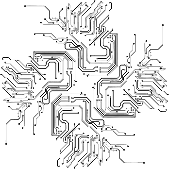
As an Electrical Engineering student at Institut Teknologi Sumatera (ITERA), I have a strong interest in Power Systems, Control & Instrumentation, and Electronic Systems. I believe that technology should not merely function as intended, but should also provide efficient, reliable, and impactful solutions that create value for both industry and society.
Throughout my academic journey, I have actively developed my technical expertise through engineering projects, research activities, and competitions. I have experience leading an Energy-Efficient Electric Prototype Vehicle Team for the Indonesian Energy-Efficient Car Competition (KMHE) as General Manager. This role provided valuable experience in project management, strategic decision-making, cross-functional coordination, and problem-solving in demanding and fast-paced environments. In addition, I have been involved in the development of microcontroller-based systems, instrumentation systems, and Internet of Things (IoT) applications, allowing me to strengthen both my technical and analytical capabilities.
One of my key strengths is the ability to combine technical knowledge with leadership and communication skills. I am accustomed to working in multidisciplinary teams, adapting to new challenges, and transforming technical requirements into practical and effective engineering solutions. My active involvement in student organizations, event management, community service programs, and research activities has further enhanced my collaboration, time management, and professional skills.
I am highly motivated to continue expanding my expertise in Power Engineering, Industrial Automation, Control Systems, Instrumentation, Electronics, and Sustainable Energy Technologies. I am passionate about continuous learning and committed to contributing to innovative projects that drive technological advancement and operational excellence.
Currently, I am open to internship opportunities, research collaborations, and professional engagements that allow me to contribute meaningfully while further developing my skills and experience in the engineering field.
Driven by curiosity, guided by engineering principles, and committed to creating solutions that make a meaningful impact.
Fundamental understanding of electrical power systems including power distribution, grounding systems, load analysis, and measurement of electrical parameters such as voltage, current, and power in practical applications.
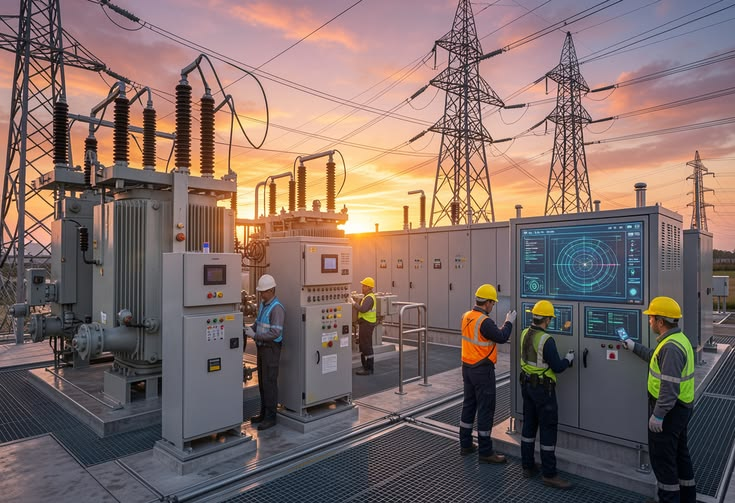
Design and implementation of control and instrumentation systems based on microcontrollers and microcomputers such as Arduino, STM32, ESP32, and Raspberry Pi 5. Includes sensor integration, actuator control, signal processing, and development of embedded control logic for measurement and automation applications.
Design and implementation of Internet of Things (IoT) systems using platforms such as Arduino, ESP32, STM32, and Raspberry Pi 5. Experienced in real-time data acquisition, remote monitoring, and system prototyping using Blynk for IoT dashboards and Wokwi for hardware simulation and testing.
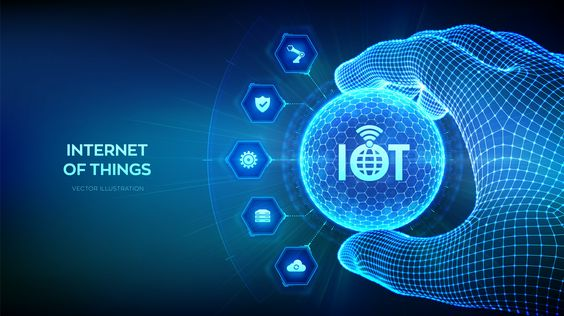
Development of embedded solutions using microcontrollers such as Arduino and ESP32 for real-time data acquisition, system control, and integration of sensors and actuators in engineering applications.
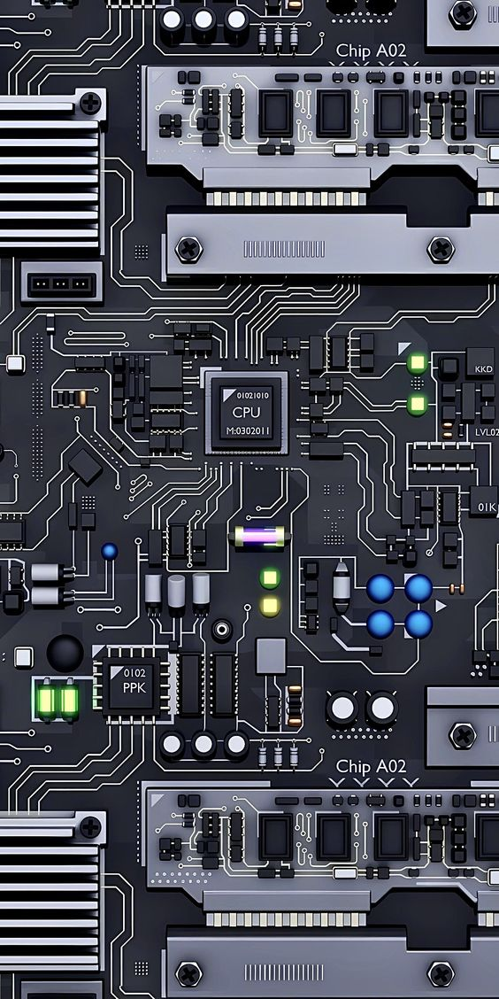
Experience in leading technical teams within engineering projects and organizations, including team coordination, decision-making, problem-solving, and resource management in collaborative environments.
Design of a photocatalyst reactor system for degradation of synthetic liquid dye waste, equipped with spectrophotometer-based detection and web-based real-time monitoring.
Design of UTM interface circuit based on Arduino UNO on a Printed Circuit Board, utilizing MQTT protocol for web-based data transmission and load cell sensor for force measurement.
Electrical system development for energy-efficient electric vehicle prototype, including motor controller design and energy optimization for national competition.
Device for monitoring voltage, current, and power consumption in households based on ESP8266 integrated with Blynk IoT dashboard and PZEM sensor for real-time parameter display.
Automatic plant watering system integrated with Firebase for cloud data storage and remote monitoring, utilizing turbidity, pH, and DHT22 humidity sensors for precision irrigation control.
Design and implementation of BJT Common Emitter Amplifier circuit with complete PCB layout designed using Proteus software, including simulation verification before fabrication.
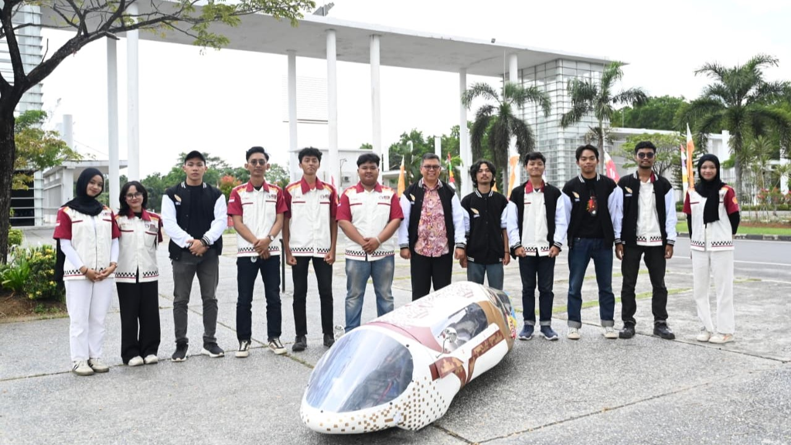
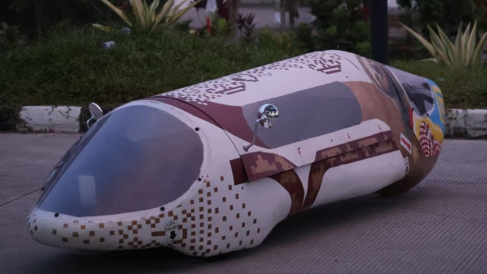
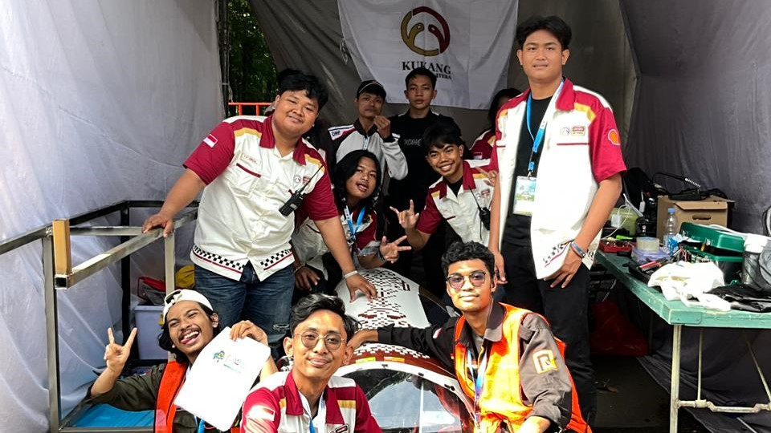
As the head and highest authority responsible for all matters related to Kukang EV ITERA. Leading 81 active student members while realizing flagship programs and upholding the community's reputation for continued excellence and competence.
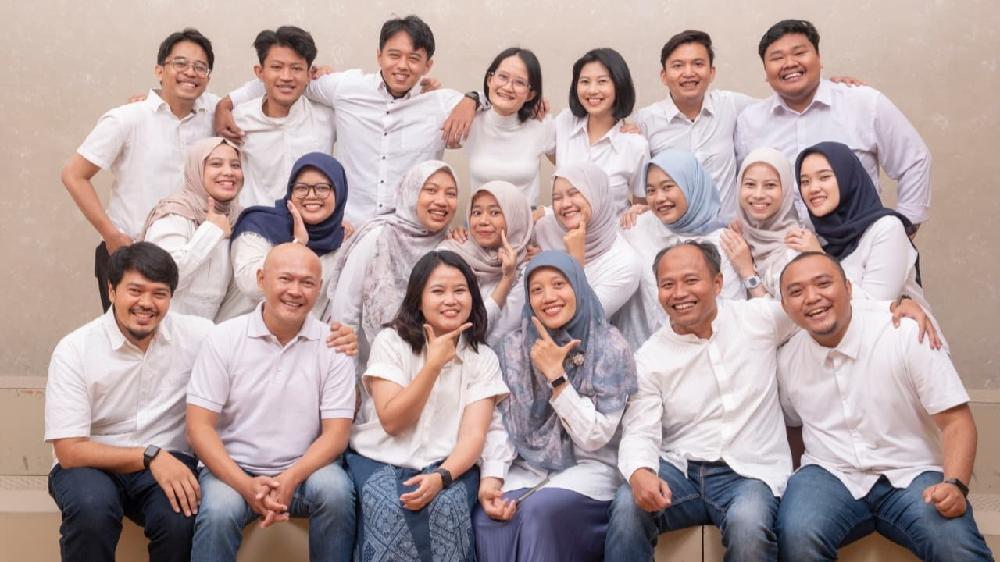
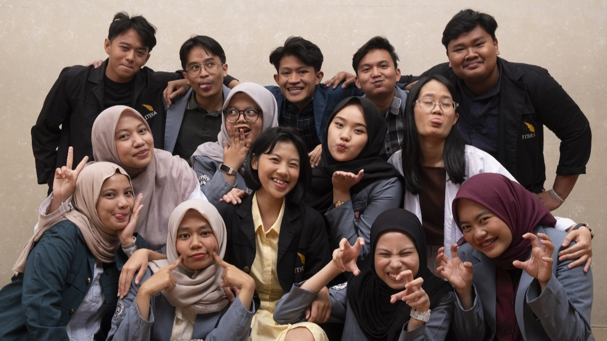
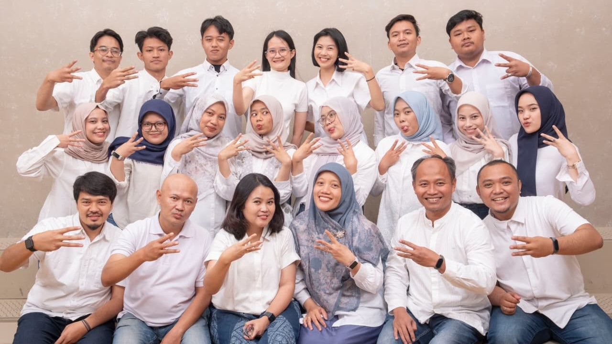
The Intelligent Electronic Systems Research Group focuses on the analysis, design, and implementation of intelligent control, navigation, and detection algorithms using various electronic devices to direct, monitor, and detect the behavior of dynamic systems in transportation, health, disaster mitigation, military, agriculture, maritime, energy, and industry sectors.
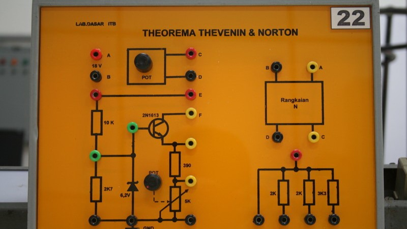
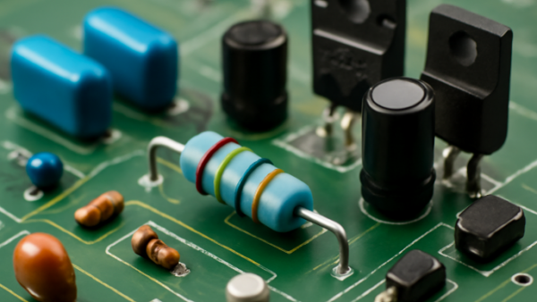
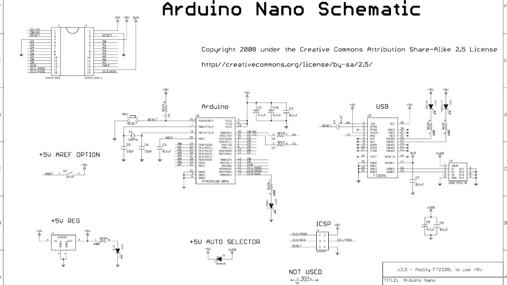
Served as a teaching assistant for the Electrical Circuits and Microprocessor Systems courses. Prepared instructional modules and materials, and operated and modified programs and equipment to meet practicum requirements and introduce students to the subject area.
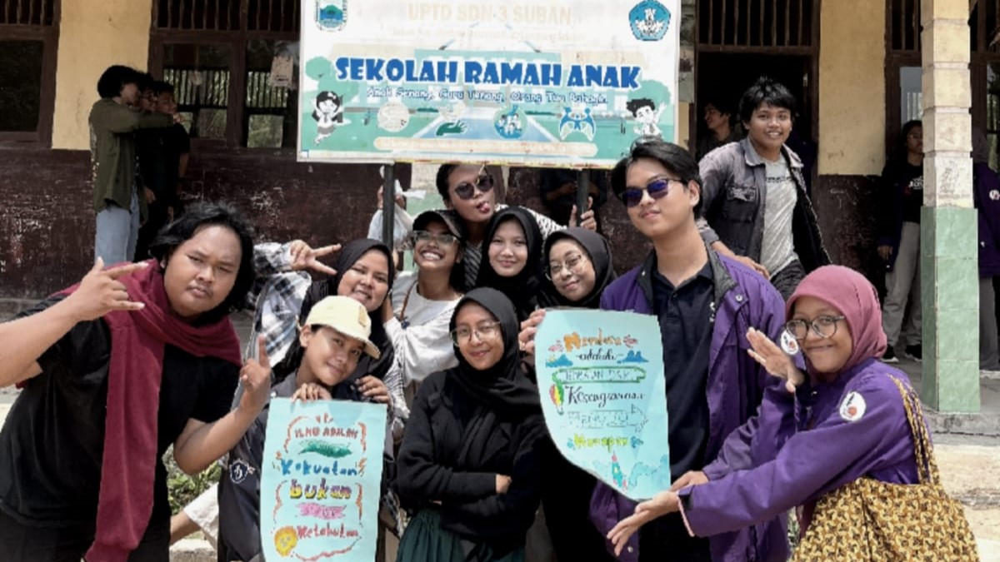
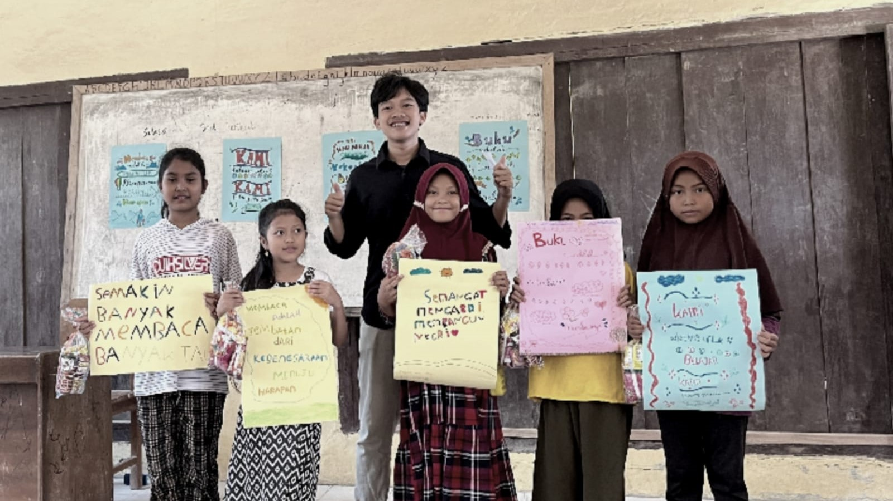
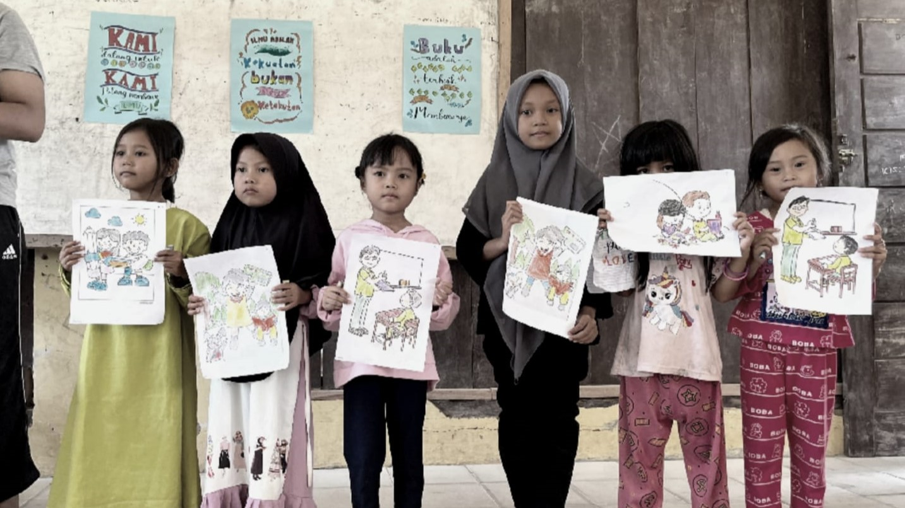
ITERA Mengajar is a community service program under the Student Family (KM) of Institut Teknologi Sumatera (ITERA). As an implementation of the Tri Dharma of Higher Education, the program focuses on equitable access to education, improving children's learning quality across various regions, and empowering the potential of rural communities.
Interest in electrical power distribution, grounding systems, load analysis, and power quality, with a focus on building reliable and efficient power infrastructure.
Design and study of automated control systems for industrial applications including PLC programming, SCADA systems, and process automation.
Research in electric vehicle drivetrain systems, motor control, and energy management strategies for prototype competition vehicles.
Development of measurement and instrumentation systems using sensors, signal conditioning, and data acquisition platforms for precision engineering.
Exploration of sustainable energy conversion and storage systems including solar, photocatalytic processes, and energy-efficient technologies.
Integration of embedded microcontrollers with IoT platforms for connected sensing, remote monitoring, and intelligent edge computing applications.